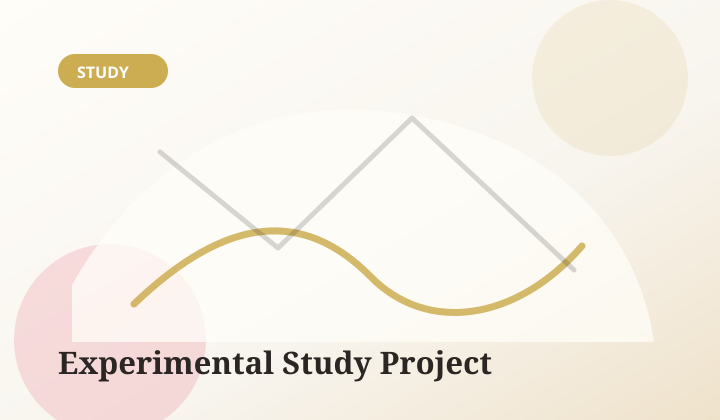

Project: First Light
An emotional visual novel about small acts of courage, family wounds, and the first fragile step toward joy.
- StatusIn Development
- GenreEmotional Visual Novel
- EngineRen'Py
- ReleaseTBA
- FormatFree release planned
Our catalog is still in its earliest stage. These entries are living spaces for prototypes, experiments, and the first emotional visual novels being shaped under the Yorokobi Studio name. Nothing here is finished yet — and that is exactly the point.
An emotional visual novel about small acts of courage, family wounds, and the first fragile step toward joy.

A quiet anthology set around a small library at dusk, where each visitor leaves more than borrowed books behind.

A quiet mystery exploring atmosphere, branching choices, and the slow pressure of hidden truths.

A compact testbed for interface design, scene direction, music timing, and production pipelines for future works.
We are building slowly so that each project can find its proper tone, emotional core, and production shape before becoming public. Follow the journey on our studio notes.